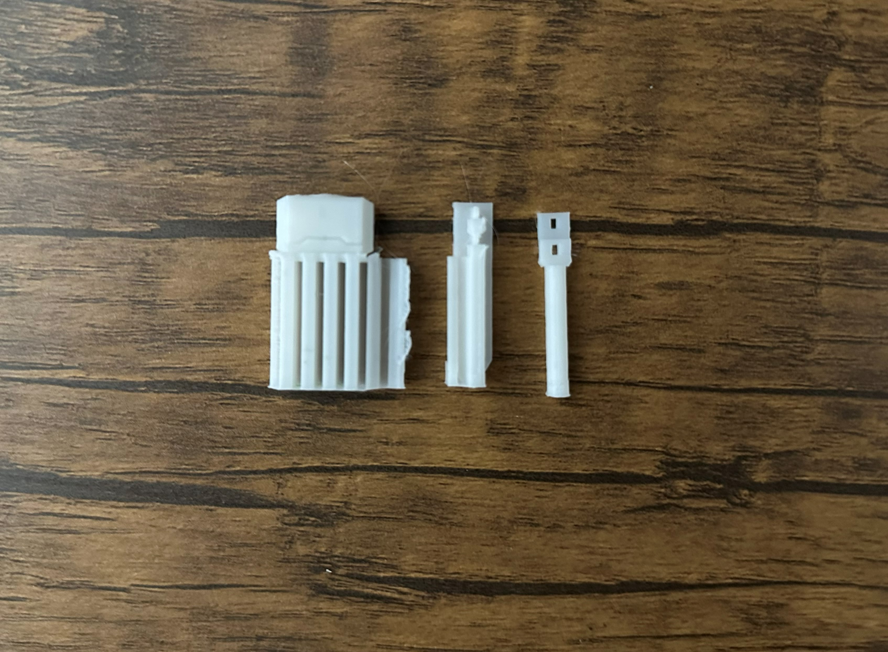
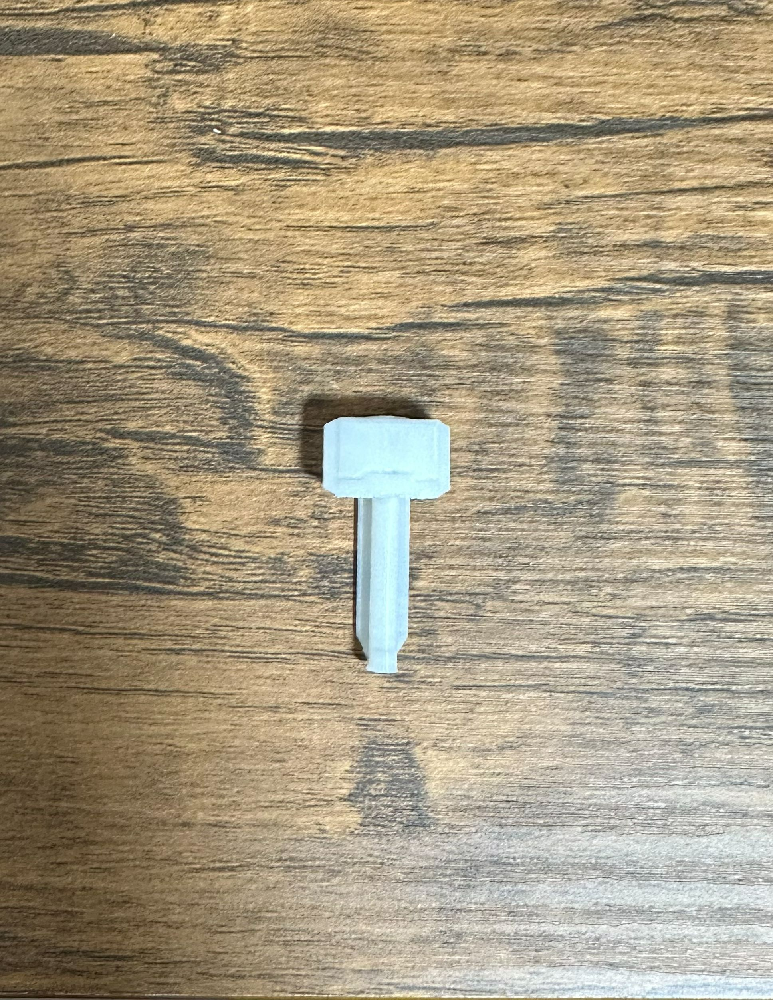
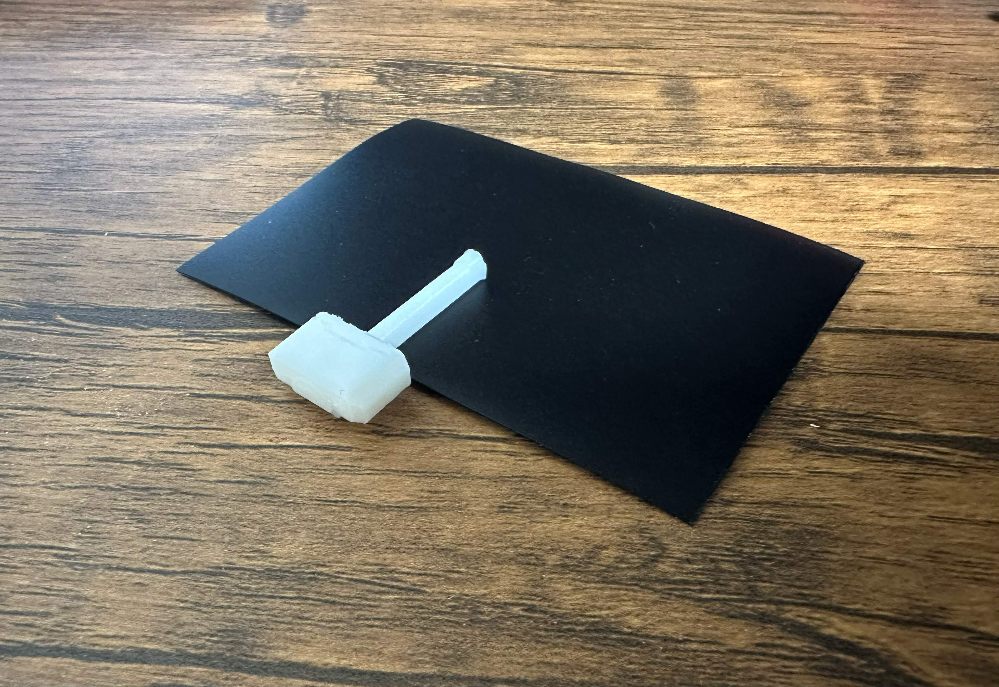

- 作品名:ハンマークリップ
- モチーフ：マーベル映画シリーズのマイティソーが所持していたハンマー、「ムジョルニア」
制作過程


出力品



STLデータ
ハンマークリップの3Dデータ.stl作品説明
- ハンマークリップは、マーベル映画シリーズのマイティソーが所持していたハンマー「ムジョルニア」をモチーフにした作品です。ハンマーの形状や装飾を忠実に再現することで、映画の世界観を感じさせるデザインとなっています。
ピンセットでは料理でトマトの皮を取ったり、細かいシールを張ることでしか考えられず、【何かを挟む】ということに着目し、紙をまとめるクリップのような形状にしようと考えました。ハンマーの形状を活かしつつ、実用性も兼ね備えたデザインとなっています。
制作理由
- 制作する大まかな形状を紙をまとめられるものが欲しかったため、クリップのような形状にしようと考えました。そこでデザインとして、直近鑑賞した映画に出てくるthorのハンマーが印象的だったため、ハンマーの形状を活かしつつ、実用性も兼ね備えたデザインとなるように制作しました。
- 3Dモデリングソフトウェアでの角の取り方や基本的な寸法の調整方法などを調べました。また、ハンマーの形状を正確に再現するために、映画の資料や画像を参考にしました。